zayne was always the last to leave the hospital. he never minded the empty halls. then one night, she asked what time he finished. "i don't know," he said. "then i'll wait," she said. and she did.
zayne was always the last to leave.
not because he had to be. because there was always one more patient. one more chart. one more reason to stay.
the hospital was quiet at night. he liked it that way. the silence. the empty halls. the fluorescent lights humming overhead.
he never minded being alone.
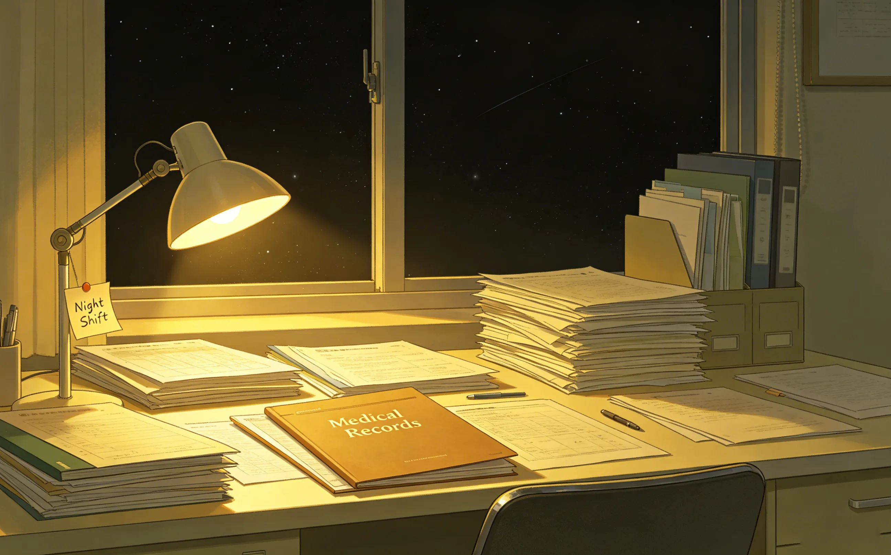
she asked him on a thursday.
she was sitting in her usual chair. the one she had claimed months ago. the one he secretly thought of as hers.
he was finishing a chart. his third one of the evening. the clock on his wall said 9:47.
"what time do you finish?" she asked.
he didn't look up. "late."
"how late?"
he glanced at the clock. "i don't know. whenever i'm done."
she was quiet for a moment. then: "then i'll wait."
he looked up. "you don't have to."
"i know."
"it could be hours."
"i know."
he stared at her. she stared back.
he didn't know what to say. so he said nothing. he went back to his chart. she stayed in her chair.
he worked. she waited. the clock ticked. the hospital grew quieter.
he forgot about her. not because he didn't care. because he was focused. surgery notes. patient updates. a consult that came in at ten.
he worked until eleven. then midnight. then one.
the hospital was silent. the nurses had gone home. the cleaning crew had finished their rounds.
he stretched. looked at the clock. 1:23am.
and then he remembered.
she was still here.
he stood up. walked to the door. looked out.
the hallway was empty.
he felt something in his chest. disappointment. guilt. something he couldn't name.
she had said she would wait. but no one waited. not really. not for him.
he should have known.
he walked toward the elevator. ready to go home. ready to be alone.
and then he saw her.
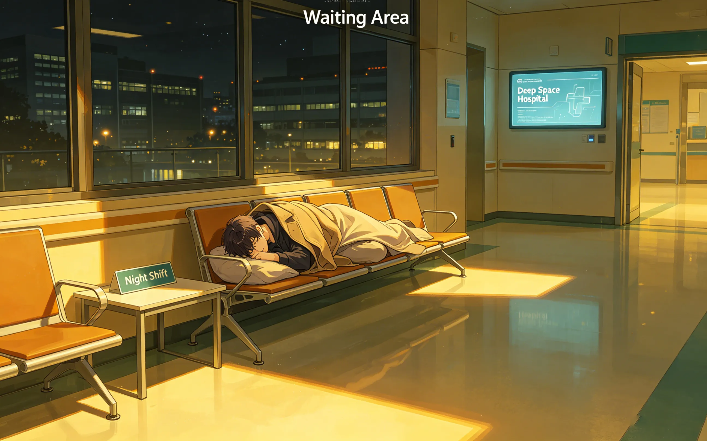
she was asleep on the bench in the main lobby.
curled up. her coat pulled tight. her bag on the floor beside her.
she had moved from his office. probably because the nurses had shooed her out. probably because she didn't want to bother him.
but she was still here. she had waited. for hours.
he stood there. looking at her. at the way her hair fell across her face. at the way her chest rose and fell. at the way she looked small and vulnerable and so, so patient.
no one had ever waited for him before.
he didn't know how long he sat there. minutes. maybe longer. he didn't check the clock.
he just sat. and watched. and thought about all the nights he had walked out of this hospital alone.
tonight was different.
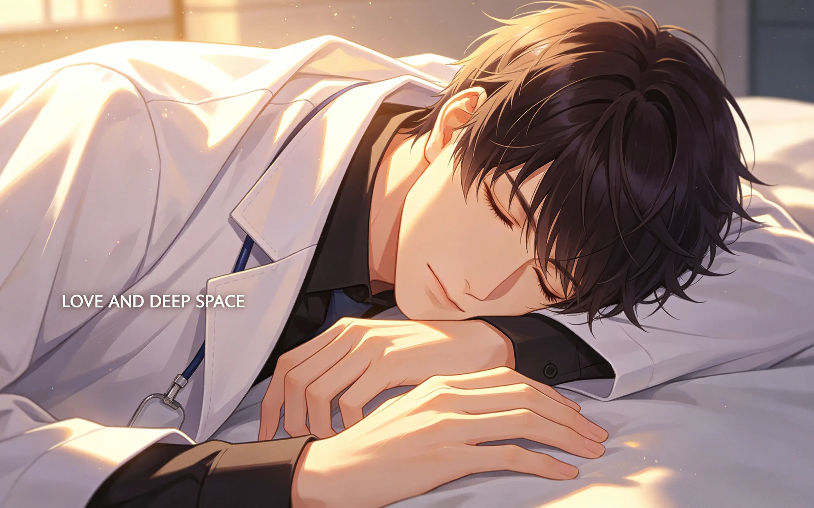
she shivered. even in her sleep.
the hospital was cold at night. the heating turned down after hours. she had been here for hours. in a thin coat. waiting.
he took off his coat. his white coat. the one with his name on it. the one he wore every day.
he draped it over her. carefully. gently. trying not to wake her.
she stirred. mumbled something. didn't open her eyes.
he tucked the coat around her shoulders. sat back. watched.
she stopped shivering.
he had spent years taking care of patients. taking care of everyone. no one had ever taken care of him.
but here she was. waiting. until one in the morning. on a cold bench. in a cold hospital. because she had said she would.
and she had.
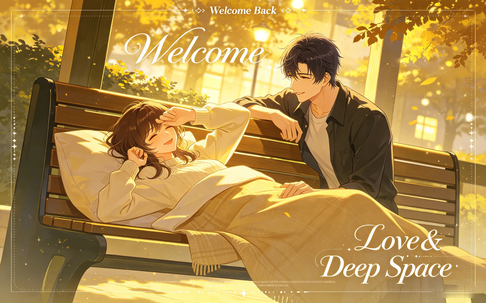
she woke up slowly.
first her fingers moved. then her eyes fluttered. then she blinked. looked around. saw him sitting next to her.
"zayne?" her voice was groggy. "what time is it?"
"late."
"how late?"
"very late."
she sat up. rubbed her eyes. noticed the coat around her shoulders. "is this yours?"
"yes."
"you gave me your coat."
"you were cold."
she looked at him. at the coat. at the bench. at the empty lobby.
"you waited," she said.
"you waited first."
he stood up. held out his hand. "let's go home."
she took it. her fingers were cold. he held them anyway.
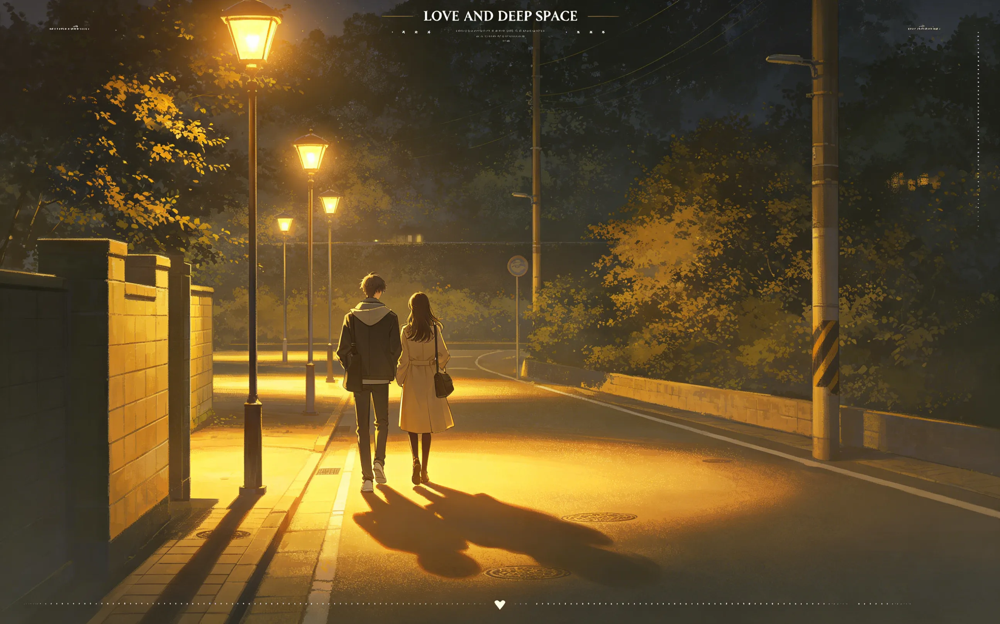
they walked home together.
not to his apartment. to hers. she lived closer. he didn't ask why they were going there. he didn't need to.
the streets were empty. the shops were closed. the only light came from the streetlamps and the moon.
"you didn't have to wait," he said.
"i know."
"why did you?"
she thought about it. "because you always leave alone. and i thought... maybe you didn't have to."
he didn't know what to say. so he said nothing.
they walked in silence. his coat still around her shoulders. her hand still in his.
the city was quiet. the night was cold. but he didn't feel cold. not anymore.
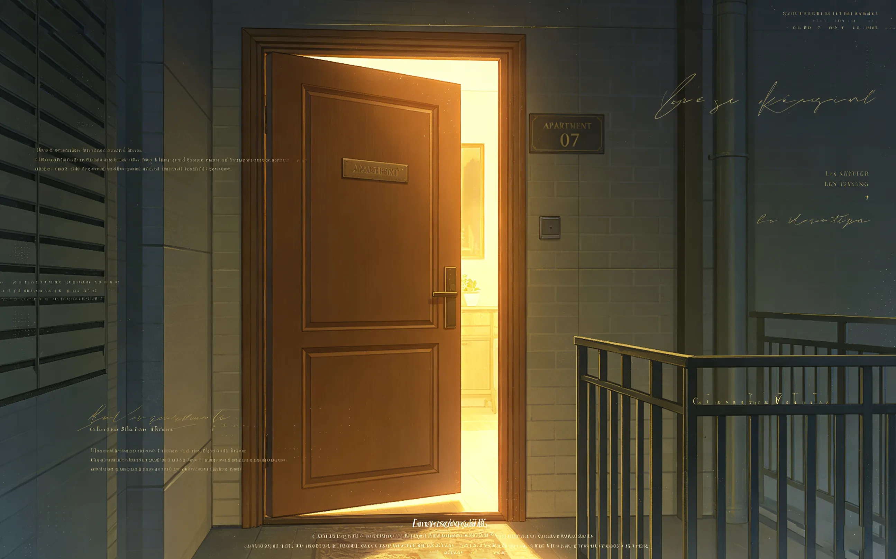
they reached her building. she stopped at the door. turned to face him.
"thank you," she said.
"for what?"
"for walking me home."
"you waited four hours. i walked twenty minutes."
"still."
she smiled. tired. warm. "goodnight, zayne."
"goodnight."
she went inside. the door closed. he stood there for a moment.
he stood there. looking at the door. thinking about the bench. the coat. the way she smiled when she woke up.
he stayed for five minutes. maybe ten. he didn't count.
then he turned and walked home. the streets were still empty. the moon was still there.
he felt different. lighter. he didn't know why.
he woke up early. earlier than usual.
he went to the hospital. the lobby was empty. the bench where she had slept was empty too.
he sat there for a moment. remembering. the way she looked. the way she shivered. the way she smiled when she woke up.
he had never been the one who was waited for. he had always been the one waiting. for patients. for surgeries. for the end of the day.
but last night, someone had waited for him.
he didn't know what to do with that. he wasn't sure he deserved it.
but he wanted it. he wanted more of it.
he stood up. walked to his office. opened the door.
the chair was empty. her chair. he looked at it for a long time.
then he sat down at his desk. and waited. for her to come. for her to sit in that chair. for her to ask what time he finished.
so he could say "i don't know." and she could say "then i'll wait."
and she would. he knew she would.
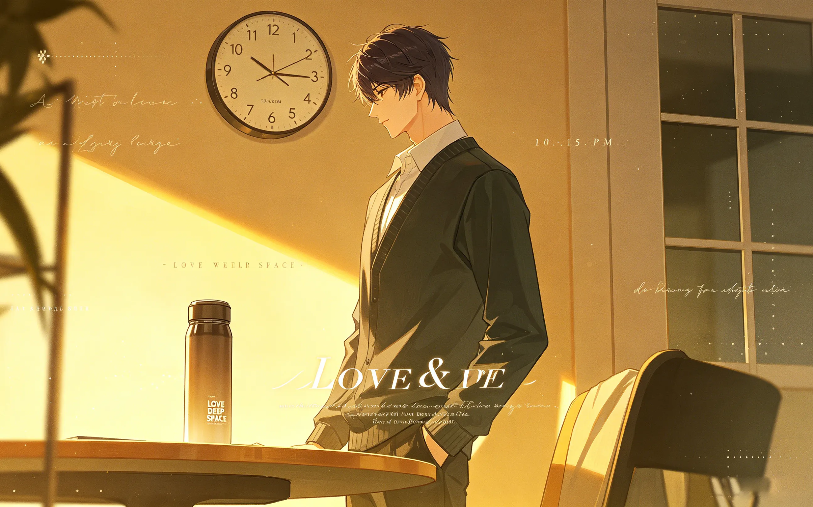
she asked again. a week later.
"what time do you finish?"
he looked at the clock. "i don't know."
"then i'll wait."
"you don't have to."
"i know."
he was quiet for a moment. then: "i'll try to finish early."
she looked surprised. "really?"
"really."
he did. he finished his charts faster. he delegated the consults. he left at eleven instead of one.
she was in the lobby. on the bench. awake this time.
"you're early," she said.
"i said i would try."
she smiled. "let's go home."
they walked together. like before. her hand in his. the streets empty. the moon high.
it became a routine. tuesdays and thursdays. sometimes fridays.
she would wait. he would try to leave earlier. sometimes he did. sometimes he didn't. but she was always there. on the bench. waiting.
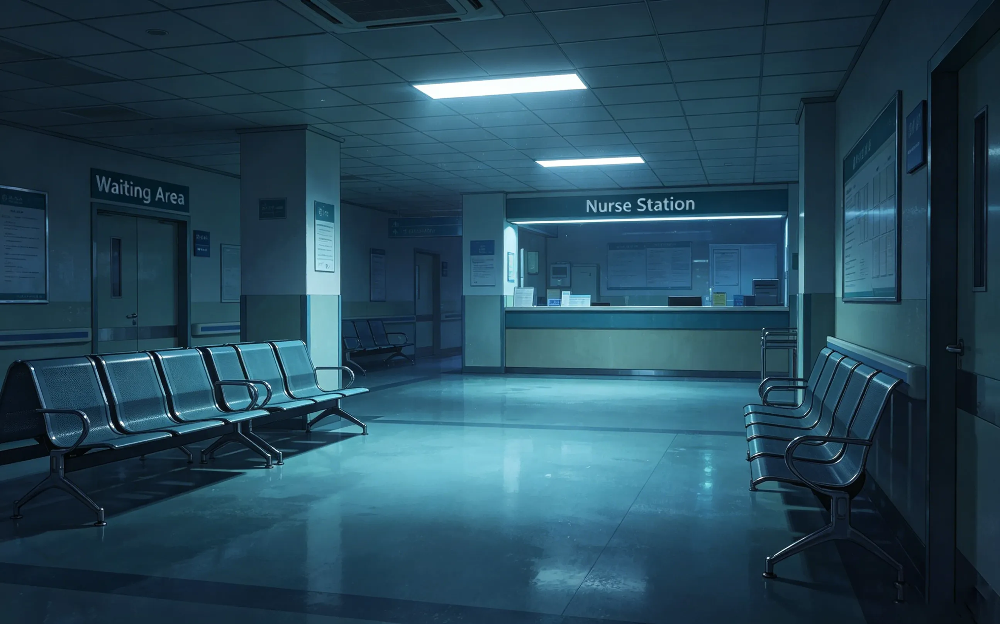
one night, he forgot.
he was in surgery. an emergency. a patient who wouldn't stop bleeding. he didn't have time to check his phone. didn't have time to think about anything else.
when he finished, it was two in the morning. he walked to the lobby. the bench was empty.
his chest tightened.
he checked his phone. twelve messages. all from her.
"i'm here."
"it's late."
"are you okay?"
"i'll wait a bit longer."
"zayne?"
"i'm going home. text me when you're done."
"goodnight."
he called her. she answered on the second ring.
"i'm sorry," he said. "i was in surgery. i didn't—"
"it's okay."
"it's not."
"zayne. it's okay."
her voice was soft. not angry. not disappointed. just... soft.
"i forgot."
"you were saving someone's life."
"still."
she was quiet for a moment. "come home. i'll make tea."
he went. she had tea ready. they sat on her couch. didn't talk much. just sat. together.
he didn't say thank you. he couldn't. the words felt too small.
but he hoped she knew.
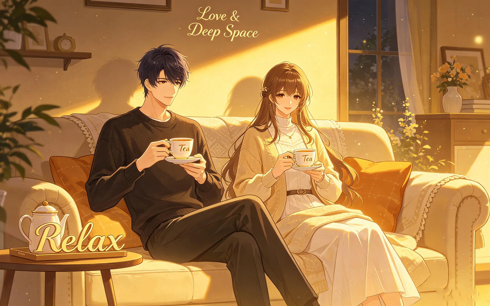
he learned something that year.
that waiting wasn't passive. it wasn't just sitting on a bench, passing time.
it was a choice. a decision to stay. to be there. to say "you're worth waiting for."
and she had made that choice. over and over.
he thought about all the nights he had walked out of this hospital alone. the empty halls. the cold air. the silence that followed him home.
he hadn't known it was loneliness. he had called it independence. he had called it strength. he had called it whatever he needed to call it to keep going.
but now, with her, he saw it for what it was. he had been hiding. from himself. from everyone. from the possibility that someone might care.
and then she showed up. on a bench. in a cold lobby. waiting. for hours. because she had said she would.
she didn't let him say no. she didn't let him pretend. she didn't let him disappear into his work and his charts and his endless, exhausting performance of being fine.
she saw him. the real him. the one who forgot to eat. who worked too late. who didn't know how to let someone in.
and she stayed anyway.
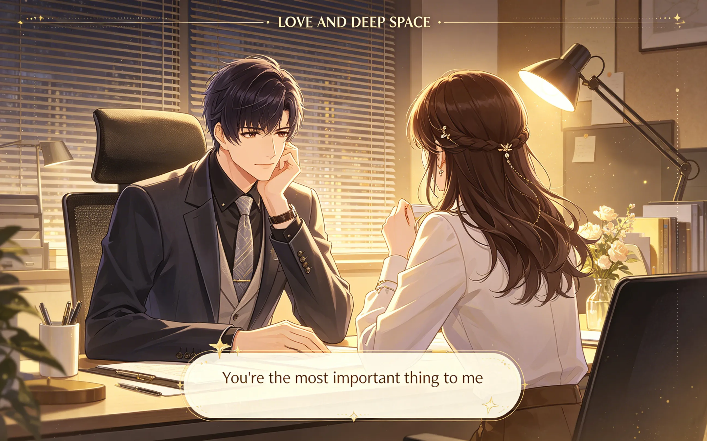
"why do you keep waiting?" he asked one day.
she looked up from her book. "because you keep coming."
"i always come."
"i know."
he thought about that. about the bench. about the coat. about the tea she made when he forgot.
"i don't know how to be waited for," he said.
"i know."
"but i'm learning."
she smiled. "i know."
he didn't say anything else. he didn't need to. she already understood.
she always understood.
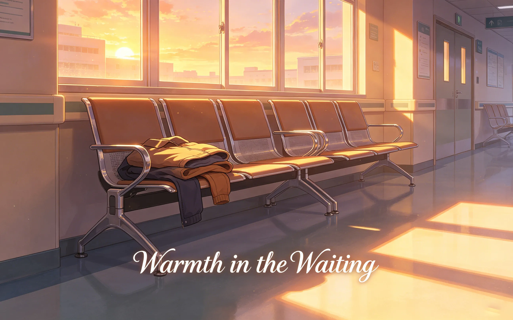
the bench is still in the lobby.
he walks past it every day. sometimes he sits on it. just for a moment. to remember.
she still waits. not every night. but often. when she does, he tries to leave earlier.
sometimes he succeeds. sometimes he doesn't. but she's always there. on the bench. waiting.
he bought her a warmer coat. left it on the bench one night. she found it. wore it home. never gave it back.
his coat is still in her closet. the white one. with his name on it. she never returned that either.
he doesn't want it back.
"i know."
"i fell asleep."
"i know."
she smiled. "you gave me your coat."
"you were cold."
"i still have it."
"i know."
he didn't say anything else. he didn't need to.
she was still here. still waiting. still choosing him.
and for the first time in his life, he let her.